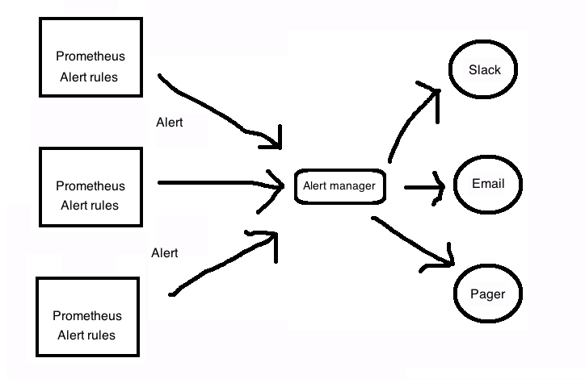

1 Alerting and Alertmanager
- Alerting is providded by a tool called Alertmanager.
- Alerting rules are defined on your prometheus server.
2 How the Alertmanager works

3 Installing Alertmanager
- Available as a standalone Go binary.
- Downloadable from Github releases
$ cd alertmanager-0.21.0.linux-amd64
$ ls
alertmanager* alertmanager.yml amtool* LICENSE NOTICE
- amtool is used to help manage the alertmanager and schedule maintenance windows from the command line.
$ alertmanager --version
alertmanager, version 0.21.0 (branch: HEAD, revision: 4c6c03ebfe21009c546e4d1e9b92c371d67c021d)
build user: root@dee35927357f
build date: 20200617-08:54:02
go version: go1.14.4
4 Configuring the Alertmanager
- alertmanager.yml is used to configure it. Default configuration
file:
$ bat alertmanager.yml ───────┬────────────────────────────────────────────── │ File: alertmanager.yml ───────┼────────────────────────────────────────────── 1 │ global: 2 │ resolve_timeout: 5m 3 │ 4 │ route: 5 │ group_by: ['alertname'] 6 │ group_wait: 10s 7 │ group_interval: 10s 8 │ repeat_interval: 1h 9 │ receiver: 'web.hook' 10 │ receivers: 11 │ - name: 'web.hook' 12 │ webhook_configs: 13 │ - url: 'http://127.0.0.1:5001/' 14 │ inhibit_rules: 15 │ - source_match: 16 │ severity: 'critical' 17 │ target_match: 18 │ severity: 'warning' 19 │ equal: ['alertname', 'dev', 'instance'] ───────┴────────────────────────────────────────────── - Official reference of the above configuration
- route block tells alertmanager what to do with specific incoming alerts.
- receiver block specifies alert destination.
5 Running Alertmanger
$ alertmanager --config.file alertmanager.yml
Access web interface on http://localhost:9093
5.1 Configuring prometheus for Alertmanager
Edit prometheus.yml:
alerting:
alertmanagers:
- static_configs:
- targets:
- alertmanager:9093
Re-run the prometheus server and you can see the configured alertmanager in http://localhost:9090/status
5.2 Monitoring Alertmanager
Even alertmanager exposes metrics, let's configure prometheus.yml
to scrape it:
- job_name: 'alertmanager'
static_configs:
- targets: ['localhost:9093']
This will scrape a series of time series prefixed with alertmanager_
6 Adding alerting rules
$ touch node_alerts.yml
Edit prometheus.yml:
rule_files:
- "rules/node_alerts.yml"
$ bat rules/node_alerts.yml
───────┬────────────────────────────────────────────────────────────────────────────────────────────────────────────────────────────────────────────────────────────────────────────────────────────────────────────────────────────────────────────────────────
│ File: rules/node_alerts.yml
───────┼────────────────────────────────────────────────────────────────────────────────────────────────────────────────────────────────────────────────────────────────────────────────────────────────────────────────────────────────────────────────────────
1 │ groups:
2 │ - name: node_alerts
3 │ rules:
4 │ - alert: HighNodeCpu
5 │ expr: instance:node_cpu:avg_rate5m > 80
6 │ for: 60m
7 │ labels:
8 │ severity: warning
9 │ annotations:
10 │ summary: High Node CPU for 1 hour
11 │ console: You might want to check the Node Dashboard at http://working-grafana-url.com
- Note that the metric instance:nodecpu:avgrate5m was already created in Chapter 4
- Group name: nodealerts
- Alert name: HighNodeCpu
- In each alert group, the alert name needs to be unique.
- expr clause contains the expression that will trigger the alert.
- for clause controls the length of time the test expression must be true for before the alert is fired.
- label clause allows us to specify additional labels to be attached to the alert.
- annotation clause allows us to specify informational labels like a description, a link to a run book, or instructions on how to handle the alert.
7 Alert States
- Inactive: The alert is not active
- Pending: The alert has met the expression but is still waiting for the duration specified in the for clause.
- Firing: Alert has met the expression and has been in Pending
state for longer than the druation of the for clause.
You can see the above states in Prometheus dashboard
8 Routing
- Alertmanager needs to route to various destinations.
- Routing acts like a tree. The top, default route is always
configured and matches anything that isn't matched by a child route.
route: group_by: ['alertname'] group_wait: 10s group_interval: 10s repeat_interval: 1h receiver: 'email' routes: - match: severity: critical receiver: pager - match_re: severity: ^(warning|critical)$ receiver: support_team receivers: - name: 'email' email_configs: - to: 'alerts@example.com' - name: 'pager' email_configs: - to: 'alert-pager@example.com' - name: 'support_team' email_configs: - to: 'support@example.com' - groupby controls how the Alertmanager groups alerts. In the above example all alerts from a specific instance will be grouped together.
- groupwait is to see if other alerts from that group are received before firing the alerts.
- groupinterval: After alerts are fired, if new alerts from the
next evaulation are received for the grouping, Alertmanager will
wait for the peroid mentioned in the
group_intervaloption before sending the new alerts. This is to prevent alert floods for grouping of alerts. - repeatinterval is a pause that is applied to each single alert and is the period to wait to resend the same alert.
8.1 Resolution alerts
- These are alerts generated when the alert condition has been resolved.
- Configured via sendresolved in your receiver configuration
- Sending resolution alerts is not recommended.
9 Silences and maintenance
- Prometheus calls muting of alerts as a "silence" .
- Useful if you want to take your service down for maintenance and don't want alarms to be triggered.
- Silences can be set for specific period or you can manually expire it.
You can schedule silences using
- Alertmanager dashboard: http://localhost:9093/
- amtool CLI (Tutorial here)